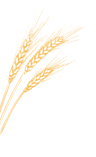
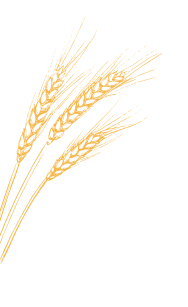

Тимофей и Ирина увлеклись хлебопечением после того, как поняли, что в Новосибирске нереально купить такие багеты, как во Франции. «Жито» родилась из семейного увлечения. Супруги, поездив по миру и попробовав разный хлеб, занялись домашним хлебопечением. Этот мир оказался настолько увлекательным, что захотелось погрузиться в него ещё глубже.
В пекарне «Жито» сейчас пекут с десяток видов хлеба, несколько бриошей (сдобные булочки) и печенье. Вся продукция подходит под определение artisanal, которое отличает во Франции действительно хорошую пекарню от обычной (где могут использовать и замороженные полуфабрикаты). Здесь можно купить и классический багет, но в основном это вполне авторские рецептуры, пусть и разработанные на основе мирового опыта. Базовых ингредиентов вроде немного (пшеничная и ржаная мука, солод, разные семечки и орехи), но, комбинируя их так и эдак, можно получить огромное разнообразие.